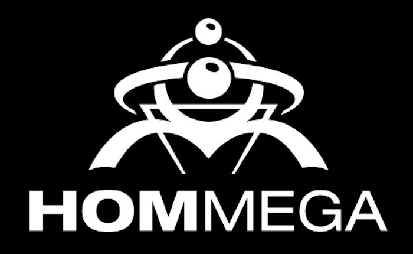

Cut From the Catalog: HOMmega Productions


Record labels have long been the gatekeepers of the dance music space, as they continuously define and reshape tastes via releases, endless talent scouting, and the curation of brand-hosted parties. In our Cut From the Catalog series, we big-up established and buzzing imprints alike by taking a look at the organizations’ ops while running through a retrospective mix built solely from their respective catalogs.
Often, when looking at the different subcultures that populate the wider dance culture, there might be a single record label that towers above all others. When you’re talking about psytrance, HOMmega is that label. Out of all of the imprints to explode out of the Israeli psytrance scene during the late ‘90s, HOMmega is the outfit that really went the distance, transforming over the years from a mere record label into a cultural touchpoint for the scene itself.
This is largely due the iconic artists that HOMmega has helped usher into the world. Both Infected Mushroom and Astrix were part of their original roster, and both genre-busting artists have gone on to transcend the preconceptions around the genre itself, while becoming seminal electronic musicians in their own right. There are also acts like Freedom Fighters, whom HOMmega helped bring to the world during its second decade in the game.
This year, HOMmega celebrates the milestone of 20 years in the game, and all of the above-mentioned artists will be representing when Dreamstate hosts the label’s anniversary party at the Hollywood Palladium at the end of September.
In recognition of HOMmega’s contributions to the dance music landscape, and to get an idea of their journey over the past 20 years, we spoke with label founder Eyal Yankovich, who also gave us a special mix, for our latest edition of Cut From the Catalog.
Congratulations on the 20th anniversary of the label! How have things been going for the HOMmega crew so far this year?
It’s been a great year. Celebrating a milestone like your 20th anniversary isn’t something that you would ever take for granted. We are traveling around the world, spreading our sound, and collecting all fans into our universe.
Obviously, you’ve got a lot planned for the 20th anniversary. Give us a rundown on what you’ve got in the schedule to help celebrate.
The anniversary tour started in Greece, then Portugal, Mexico and Brazil. We still have Serbia, Slovenia, USA, Israel, Sweden, UK, Finland and Japan to visit (and the year is not over yet).
We released our grand compilation HOMmega 20, which features 20 tracks and remixes made by our roster. The first part of the album is composed of 10 classics remixed to represent the future harmonized with the past. The second part of the album is composed of 10 classics that loyally represent our past. Around that, we have released new albums from Infected Mushroom and Animato, a remix album for Freedom Fighters, and on the digital front, we released debut EPs of 3 of Life (GMS & Pixel), Gorovich, Dekel, as well as new releases from Sub6/Vertical Mode, Xerox and Juno Reactor.
There is still a lot coming up from HOMmega this year. To name just a few of what’s planned, we have the second Freedom Fighters album, the debut album from 3 of Life, Juno Reactor’s long-awaited studio album, an Alpha Portal EP, Space Cat, and more new-generation goodies.
Does the label view the 20th anniversary as a significant marketing opportunity, in terms of helping keep attention on all the great artists and music?
We are celebrating our 20th anniversary in order to mark 20 years of innovation. No doubt, it helps to spotlight artists who are part of this journey, but I think great artists and music always keep the attention—and not because we’ve reached a 20-year milestone. It’s something that will last much longer, as long as quality and originality are maintained.
Tell us a little bit about your history at the label. What is your role, and how would you describe working behind the scenes on a label like HOMmega?
I opened HOMmega 20 years ago. Many of the things that happened in our universe were my vision, mixed with the artists involved with the label. It led to great things, both behind the scenes and in front of it. These days, I am blessed with a great crew, which has been updated to help us meet the needs of today and all that is going on. We try to manage all of that knowledge by bringing a modern way of thinking regarding our artists, clients and releases.
The world obviously knows HOMmega for its iconic roster of artists, like Astrix and Infected Mushroom. What’s the bigger story of what’s going on behind the scenes?
It’s all about the music and the artists. Without them, there would be no soundtrack to our journey. What’s going on behind the scenes is what’s going on in front of them. We are trying to create quality, unique psytrance, and to allow the artists who are making it the privilege of touring the world and playing their music to as big an audience as possible. We try our best to create a worry-free environment, so each artist can focus on their creations. All this while trying to brand them each in their own image, so that there will be a complete and rounded story that links an artist’s music to who they are as a person.
Looking back to when the HOMmega project began, tell us a little about what inspired the establishment of the label in the first place, and what its early goals were.
In the beginning, it was very visionary and naive. We opened HOMmega with not much gain expected—just to pick up and select good music and release it to the world. Worldwide bookings are something we were not even imagining at that stage. It’s all about the music that we believe in and creating the soundtrack to our life.
How do you believe this has changed and evolved over the years?
When worldwide bookings came into the picture, it opened up bigger standards, and the label’s role evolved… everything needed to be much more polished in order to gain worldwide recognition.
Psytrance experienced an explosion in the late ‘90s, around the time the label formed, though few of your musical comrades survived. What’s the secret to your endurance?
When you believe in something from your heart, it is true and honest. Creation has no time limit, and musical variety reflects the foundation of a true way of thinking—original and timeless.
The Dreamstate crew is very excited we’ll be able to host the HOMmega experience at the Hollywood Palladium in September. What can we expect from the show?
The crew at Dreamstate are true visionaries in their own way; I think that’s our meeting point. When the HOMmega 20 concept came to life, they were immediately on board with an outstanding effort to produce a night showcasing some of our roster’s talent, with the right variety we would like to present on such an occasion. It’s going to be a dream night!
Astrix “Poision” (3 of Life remix)
Domestic “Limited Addiction” (Freedom Fighters Remix)
Astrix “Oranda” (XI live Mix 2017)
Xerox & Illumination “Battleship” (Vertical Mode Live Mix 2017)
Pixel “Happy Lepsya” (Animato Remix)
Juno Reactor “Final Frontier” (Sub6 & On3 Remix)
Infected Mushroom & Xerox “Acid Killer” (Space Cat Remix)
Sub6 “Buttersonic” (On3 Remix)
PsySex “Final Mission” (Gorovich Remix)
Xerox “Gravity Waves” (Infected Mushroom 2017 remix)
Follow HOMmega on Facebook | Twitter | SoundCloud